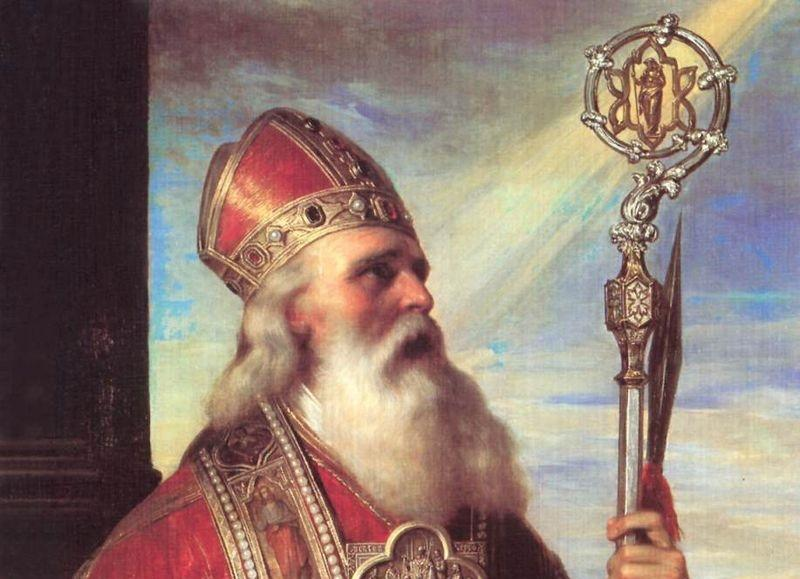

Zjazd Gnieźnieński
Poznaj historię wydarzenia, które
zapisało się na
kartach polskiej historii, jako jednen z największych sukcesów
politycznych Bolesława Chrobrego.

Zjazd Gnieźnieński
Poznaj historię wydarzenia, które |
Bolesław ChrobryPoznaj historię władcy, którego przydomek "Chrobry" oznacza człowieka mężnego, dzielnego i odważnego. Dowiedz się więcej |

Biskup WojciechPatron Polski, Czech i Węgier - to chyba najlepiej odzwierciedla jego wkład w historię Polski i Kościoła katolickiego. Dowiedz się więcej |
Kliknij, aby dowiedzieć się więcej o danym regionie.